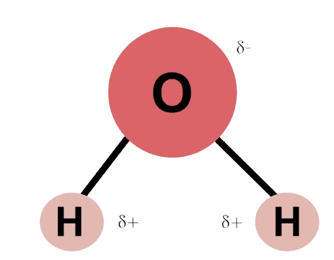

What is Water?
Water is the foundation of life on Earth, covering about 71% of the planet's surface and playing a vital role in sustaining ecosystems. It fills oceans, rivers, and lakes, while also existing underground and in the atmosphere. Water continuously moves through the hydrological cycle, evaporating into the air, condensing into clouds, and falling back as precipitation. This cycle supports all living organisms, from the smallest microorganisms to the largest mammals, ensuring that freshwater is available for drinking, agriculture, and natural habitats. Without water, life as we know it would not be possible.
Beyond its role in nature, water has been central to human civilization for thousands of years. Early settlements formed near rivers and lakes, allowing societies to thrive by providing a source for drinking, irrigation, and transportation. Today, water remains crucial for industry, energy production, and sanitation. However, access to clean water is a growing challenge due to pollution, climate change, and overuse. As the global population increases, the need for sustainable water management becomes more urgent to ensure that future generations have access to this essential resource.
Properties:
Bipolarity:
Water molecules have a slightly positive charge on the hydrogen atoms and a slightly negative charge on the oxygen atom, making them bipolar. This polarity allows water to form hydrogen bonds with other molecules, influencing its ability to dissolve many substances. It also helps water interact with biological molecules like proteins and DNA, playing a critical role in cellular processes.
Cohesion & Adhesion:
Cohesion refers to the attraction between water molecules due to hydrogen bonding, which helps water form droplets and creates surface tension. Adhesion is water’s ability to stick to other materials, allowing it to spread across surfaces and climb structures. These properties are crucial for processes like the movement of water in plants and the formation of water films in biological membranes.
High Surface Tension:
Water has an unusually high surface tension due to strong cohesive forces between its molecules. This allows small insects, such as water striders, to walk on water without sinking. High surface tension also helps water resist external forces, enabling it to form droplets.
High Specific Heat Capacity:
Water can absorb and store large amounts of heat with only a slight change in temperature. This property helps regulate Earth’s climate by stabilizing ocean and atmospheric temperatures. It also maintains stable internal body temperatures in organisms, preventing rapid overheating or cooling in changing environmental conditions.
High Transparency:
Water is highly transparent, allowing light to pass through it with minimal absorption. This is essential for aquatic ecosystems, as sunlight can reach underwater plants and algae, enabling photosynthesis. The transparency of water also plays a role in vision, as the human eye relies on water-filled structures to focus light properly.
Lower Density of Ice:
Unlike most substances, water becomes less dense as it freezes, causing ice to float on liquid water. This unique property is due to the formation of a hexagonal crystalline structure in ice that takes up more space than liquid water. Floating ice insulates the water below, helping aquatic life survive in cold environments by preventing entire bodies of water from freezing solid.
Capillary Action:
Water can move through narrow spaces against gravity due to cohesion and adhesion working together allowing water to move through the pores. This is essential for plant life, as it allows water to travel from roots to leaves, supplying nutrients for photosynthesis. Capillary action also plays a role in everyday life, such as in ink movement in paper and the absorption of water in sponges.
Universal Solvent:
Water can dissolve a wide range of substances, including salts, sugars, and gases, making it the "universal solvent." This property is vital for biological systems, as it enables the transport of nutrients, oxygen, and waste products within cells and organisms. It also plays a key role in chemical reactions, digestion, and industrial processes like medicine production and wastewater treatment.
Sources/Distribution:
Water on Earth exists in various forms and locations, but only a small fraction of it is accessible and suitable for human use. Earth's total water supply is vast, yet the distribution of fresh, usable water is highly uneven. Almost 97% of the Earth’s water is contained in the oceans as saltwater, which is not directly usable for drinking or irrigation. The remaining 3% of Earth's water is freshwater, but much of it is locked away in glaciers and polar ice caps, leaving less than 1 percent of water to be available for consumption.
Freshwater is primarily found in rivers, lakes, and underground aquifers. Of the 3% that is freshwater, about two-thirds are stored in ice caps and glaciers, primarily in Antarctica and Greenland. The remaining one-third is accessible in lakes, rivers, and underground sources. Groundwater, which is water stored beneath the Earth's surface, makes up a significant portion of the available freshwater supply, though it can be challenging to access in certain regions. Rivers and lakes provide essential freshwater resources, serving as the primary sources for drinking water, irrigation, and industrial use.
However, the distribution of water is not equal across the globe. Some regions, such as the Amazon River basin, have abundant freshwater supplies, while others, such as parts of the Middle East and Africa, face water scarcity due to limited rainfall and uneven access to water sources. This uneven distribution poses significant challenges for water management, especially as the global population grows and demand for freshwater increases. Access to clean, safe water is a pressing issue in many parts of the world, and managing and conserving freshwater resources is crucial for ensuring sustainable access for future generations.
Water Cycle:
Evaporation is the process where water from oceans, lakes, and rivers turns into water vapor due to heat from the sun. Plants also release water vapor through transpiration, a process where moisture from leaves evaporates into the air. Together, these processes move water from Earth's surface into the atmosphere.
As warm water vapor rises, it cools and turns back into liquid water droplets, forming clouds. This process is responsible for cloud formation and plays a key role in regulating global temperatures by releasing stored heat into the atmosphere.
When clouds become heavy with condensed water droplets, they release water back to Earth as rain, snow, sleet, or hail. This replenishes freshwater sources such as rivers, lakes, and underground aquifers, sustaining plant and animal life.
Some precipitation directly enters bodies of water, while some infiltrates the soil, replenishing groundwater. This stored water can later be used by plants, flow into streams, or be extracted for human use. Water that does not infiltrate flows over land as surface runoff, eventually returning to oceans, rivers, and lakes to restart the cycle.